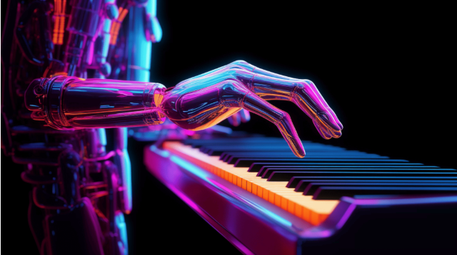
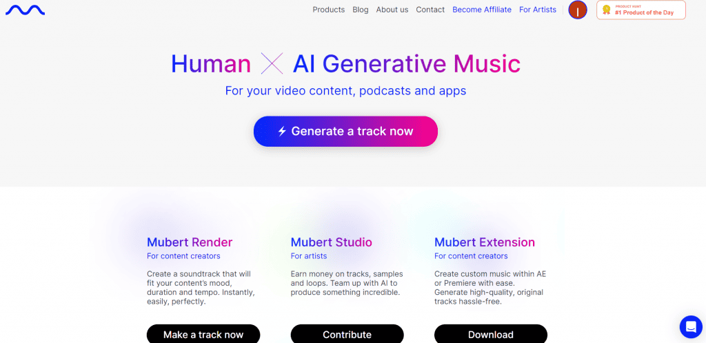
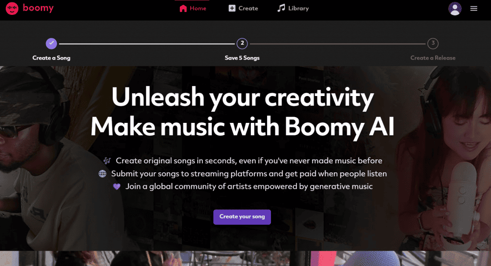

Conheça 3 sites que podem
criar músicas com inteligência artificial (IA)

Entre criatividade musical e composição,
a inteligência artificial (IA) está revolucionando como músicas
podem ser feitas. Neste artigo, apresentaremos cinco plataformas
líderes nesse campo, permitindo que entusiastas e músicos explorem
novos horizontes, gerem melodias únicas e personalizem trilhas
sonoras. Essas ferramentas emergentes marcam a convergência
entre a arte e a IA, oferecendo oportunidades excepcionais
para uma expressão musical criativa e inovadora.
1 - Mubert AI

O Mubert AI, uma plataforma pioneira
no uso de inteligência artificial na criação musical,
destaca-se por gerar músicas isentas de royalties a partir de
um vasto conjunto de amostras de centenas de artistas.
A plataforma aproveita milhões de fragmentos musicais para
criar novas composições perfeitamente alinhadas com os propósitos
do usuário. Com uma extensa gama de estilos musicais disponíveis,
o Mubert AI democratiza a economia da criação, oferecendo uma variedade de
opções para uma experiência musical personalizada.
2 - Boomy AI

O Boomy AI surge como uma ferramenta revolucionária para a produção musical.
Sua abordagem simplificada permite que até mesmo iniciantes criem músicas
originais em um piscar de olhos, dispensando conhecimento prévio em produção
musical. O destaque está na facilidade de composição de melodias únicas,
que podem ser compartilhadas em plataformas de streaming como o Spotify.
Ao tornar a criação musical acessível a todos,
o Boomy AI fomenta a expressão artística.
3 - Beatoven
O Beatoven apresenta uma proposta ousada: permitir que os
usuários componham músicas a partir do zero. A plataforma oferece
uma experiência única, onde os usuários podem definir títulos,
emoções, ritmos e estilos musicais, personalizando cada aspecto
de suas criações. Com uma interface intuitiva, o Beatoven se
destaca como uma ferramenta versátil, atendendo a músicos e
entusiastas que buscam expressar sua musicalidade de maneira
autêntica.